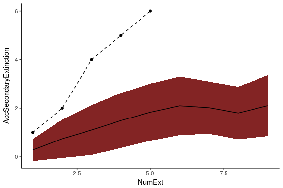
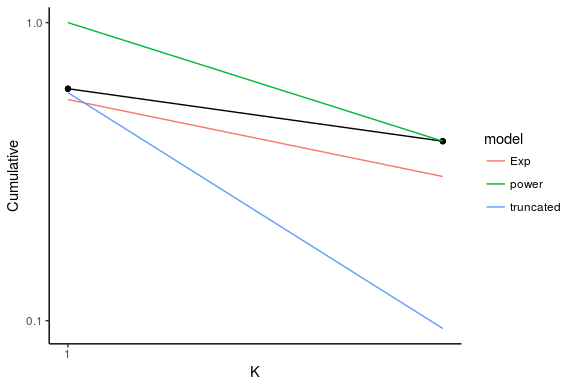

How to use the NetworExtinction Package
Isidora Avila and Derek Corcoran
2018-03-03
1 Introduction
The objective of the NetworkExtinction package is to analyze and visualize the topology of the food-webs. At the same time to analyze and visualize how the food-web responds to the primary removal of species.
The principal index that are incorporated are:
Node numbers: Total number of species in the network (Dunne, Williams, and Martinez 2002).
Link number: Number of trophic relationships represented in the food web (Dunne, Williams, and Martinez 2002).
Connectance: Proportion of all possible trophic links that are actually realized (Dunne, Williams, and Martinez 2002).
Primary removals: Occurs when the researcher intentionally removes a species simulating an extinction.
Secondary extinctions: A secondary extinction occurs when a non-basal species loses all of its prey items resulting from the primary removal of another species. In this context, basal species may experience primary removal, but not secondary extinctions (Dunne, Williams, and Martinez 2002).
Total extinctions: Primary species removal plus secondary extinctions
1.1 How to install the package
install.packages(NetworkExtinction)
library(NetworkExtinction)This package has four different functions (see above for details):
Mostconnected: Extinctions from most connected to less connected
ExtinctionOrder: Extinctions from custom order
RandomExtinctions:
degree_distribution: Degree distribution analysis
1.2 How to create a network object
NetworkExtinction package use a network object to make an analysis.
For create a network object you can start with a matrix or a edgelist object (for more details see network package (Butts and others 2008)).
1.2.0.1 A Example
#create a matrix
a<- matrix(c(0,0,0,0,1,0,0,0,0,0,0,0,0,0,0,1,0,0,0,1,0,0,0,0,0,0,1,0,0,0,0,0,0,0,0,0,1,0,0,0,0,0,0,0,0,0,0,1,0,0,0,0,0,0,0,0,0,1,1,0,0,0,0,0,0,0,0,0,0,1,0,0,0,0,0,0,0,0,0,1,0,0,0,0,0,0,0,0,0,0,0,0,0,0,0,0,0,0,0,0), nrow=10, ncol=10)
#the matrix of the data(net) used below is the transpose of a
a<- t(a) #transpose matrix a
a
#> [,1] [,2] [,3] [,4] [,5] [,6] [,7] [,8] [,9] [,10]
#> [1,] 0 0 0 0 1 0 0 0 0 0
#> [2,] 0 0 0 0 0 1 0 0 0 1
#> [3,] 0 0 0 0 0 0 1 0 0 0
#> [4,] 0 0 0 0 0 0 1 0 0 0
#> [5,] 0 0 0 0 0 0 0 1 0 0
#> [6,] 0 0 0 0 0 0 0 1 1 0
#> [7,] 0 0 0 0 0 0 0 0 0 1
#> [8,] 0 0 0 0 0 0 0 0 0 1
#> [9,] 0 0 0 0 0 0 0 0 0 0
#> [10,] 0 0 0 0 0 0 0 0 0 0
#create a network
library(network)
net <- as.network(a, loops = TRUE)
net
#> Network attributes:
#> vertices = 10
#> directed = TRUE
#> hyper = FALSE
#> loops = TRUE
#> multiple = FALSE
#> bipartite = FALSE
#> total edges= 10
#> missing edges= 0
#> non-missing edges= 10
#>
#> Vertex attribute names:
#> vertex.names
#>
#> No edge attributes1.2.1 Extinctions from most connected to less conected
The function to do this analysis is called Mostconnected
This function orders the species from the most connected species to the least connected species, using total degree. Then, remove the most connected species in the network and calculate the topological indexes of the network (which were mentioned above) and count how many species have indegree 0 (secondary extinction), without count primary producers. Then, remove the species that were secondarily extinct in the previous step and recalculate which is the new most connected species and so on, until the number of links in the network is zero (Sole and Montoya 2001; Dunne, Williams, and Martinez 2002; Dunne and Williams 2009)
library(NetworkExtinction)
data("net")
Mostconnected(Network = net)
#> [1] 1
#> [1] 2
#> [1] 3
#> [1] 4
#> Spp nodesS linksS Conectance LinksPerSpecies Secondary_extinctions
#> 1 6 9 7 0.08641975 0.7777778 1
#> 2 7 7 4 0.08163265 0.5714286 0
#> 3 5 6 2 0.05555556 0.3333333 1
#> 4 2 4 0 0.00000000 0.0000000 1
#> aislate_nodes AccSecondaryExtinction NumExt TotalExt
#> 1 1 1 1 2
#> 2 2 1 2 3
#> 3 3 2 3 5
#> 4 4 3 4 7The result is a dataframe. The first column (Spp) indicates which was the species that was removed as a primary removal.
The column Secondary_extinctions represent the numbers of the species that are extinguished in a secondary form, and the AccSecondaryExtinction column represents the accumulated secondary extinction.
to plot the results, see function ExtinctionPlot
data("net")
history <- Mostconnected(Network = net)
#> [1] 1
#> [1] 2
#> [1] 3
#> [1] 4
ExtinctionPlot(History = history, Variable = "AccSecondaryExtinction")Fig 1. The graph shows the number of accumulated secondary extinctions that occur when removing species from the most connected to the least connected
1.2.2 Extinctions from custom order
The function to do this analysis is called ExtinctionOrder
It takes a network extinguishes species using a given order, then it calculates the topological food-web index and the secondary extinctions.
data("net")
ExtinctionOrder(Network = net, Order = c(2,4,7))
#> $DF
#> Spp nodesS linksS Conectance Secondary_extinctions
#> 1 2 9 8 0.09876543 1
#> 2 4 7 5 0.10204082 1
#> 3 7 5 3 0.12000000 0
#> AccSecondaryExtinction NumExt TotalExt
#> 1 1 1 2
#> 2 2 2 4
#> 3 2 3 5
#>
#> $Graph#>
#> attr(,"class")
#> [1] "ExtinctionOrder"The results it is a dataframe with the topological index of the food-web in each extinction step (like MostConnected results). Additionally, the result generate a plot that show the number of accumulated secondary extinctions that occur when removing species
1.2.3 Random extinction
The function to do this analysis is called RandomExtinctions From a network, a certain amount of simulations is done (nsim), in which the species are extinguished in a random order.
the objective is to compare whether the number of secondary extinctions that occur when extinguishing species in a particular order (MostConnected or Extinctionorder) is different from the number of secondary extinctions that occur when executing primary extinction orders in a random manner.
data(net)
RandomExtinctions(Network= net, nsim= 10)
#> $sims
#> # A tibble: 8 x 3
#> NumExt SdAccSecondaryExtinction AccSecondaryExtinction
#> <int> <dbl> <dbl>
#> 1 1 0.483 0.300
#> 2 2 0.816 1.00
#> 3 3 0.972 1.50
#> 4 4 1.33 2.00
#> 5 5 1.25 2.12
#> 6 6 1.07 2.14
#> 7 7 1.15 2.00
#> 8 8 1.15 2.67
#>
#> $graph
The result is a dataframe and a graph.
In the dataframe, The first column (NumExt) represents the number of extinction that occurs by primary removal. The second one, represents the deviation to the average of the accumulated secondary extinctions that occur when, independently of species identity, a certain number of species is extracted by primary removal. The third one, represents the average of the accumulated secondary extinctions that occur when, regardless of the specie identity, a certain number of species is extracted by primary removal.
In the graph, the figure shows the accumulated secondary extinction with their deviation (red shadow) that occur as the number of primary removal increases
1.2.4 Comparison of Null hypothesis with other extinction histories
By using the RandomExtincton function, we create a null hypothesis for us to compare it with either an extinction history generated by the ExtinctionOrder function or the Mostconnected function. In order to compare the expected extinctions developed by our null hypotehsis with the observed extinction history we developed the CompareExtinctions fucntion.
The way to use this function is to first create the extinction history and the null hypothesis and then use the function to compare them:
data("net")
History <- ExtinctionOrder(Network = net, Order = c(1,2,3,4,5,6,7,8,9,10))
set.seed(2)
NullHyp <- RandomExtinctions(Network = net, nsim = 1000)
Comparison <- CompareExtinctions(Nullmodel = NullHyp, Hypothesis = History)the resulting object will have a graph with a dashed line showing the observed extincion histoy, and a solid line showing the expected value of secondary extinctions originated at random:
Comparison$graph
We will also get a Test object which will show the goodness of fit statistics of the comparison:
Comparison$Test
#>
#> Pearson's Chi-squared test
#>
#> data: Hypothesis$DF$AccSecondaryExtinction and Nullmodel$sims$AccSecondaryExtinction[1:length(Hypothesis$DF$AccSecondaryExtinction)]
#> X-squared = 20, df = 16, p-value = 0.2202since the p value is 0.22 which is larger than 0.05, we consider that the generated extinction history is significantly different than the null hypothesis.
1.2.5 Degree distribution analysis
The function to do this analysis is called degree_distribution
degree_distribution function calculate the cumulative distribution of the number of links that each species in the food network has (Estrada 2007). Then, three expected distribution to the observed distribution, this are: * Exponential distribution model * Power-law distribution model
* Truncated power-law distribution model
At the same time, the degree_distribution function calculate the AIC to recognize among the three models mentioned above, which is the one that best fits to the observed distribution.
Finally, the degree_distribution function generate a plot of the observed degree distribution in a log-log scale fitting the three models mentioned above
data("net")
degree_distribution(net, name = "Test")
#> $DDvalues
#> K Cumulative Scenario Exp power truncated
#> 1 0 1.0 Test 1.0000000 NA NA
#> 2 1 0.6 Test 0.5518412 1.0000000 0.58194330
#> 3 2 0.4 Test 0.3045288 0.4000002 0.09412862
#> 4 3 0.0 Test 0.1680515 NA NA
#>
#> $models
#> sigma isConv finTol logLik AIC BIC deviance
#> 1 0.1150005 TRUE 2.576500e-06 3.5508855 -3.101771 -4.3291822 0.03967534
#> 2 0.3064039 TRUE 7.401290e-06 0.2209724 3.558055 0.9443495 0.09388334
#> 3 0.4000000 TRUE 5.034098e-07 -0.3121484 4.624297 2.0105912 0.16000000
#> df.residual model
#> 1 3 Exponential
#> 2 1 truncated
#> 3 1 Power
#>
#> $graph
The function generate three results:
A list with the observed value of the network degree distribution (column K and Cumulative) and the expected values of the each fitting model (Exp = Exponential model, Power = Power-law model, truncated = Truncated Power-law model). k represent the degree of the network and cumulative the probability that each specie could be have this degree (pk).
A list with the results if the AIC among the three models. In this case the model list are order from the best to the worst model.
A Graph of the observed degree distribution with the fit of the three models.
- Observation: In the graph, the zero values are not represented but this result are incorporate in the DDvalues result.
Note the various macros within the vignette section of the metadata block above. These are required in order to instruct R how to build the vignette. Note that you should change the title field and the \VignetteIndexEntry to match the title of your vignette.
Bibliography
Butts, Carter T, and others. 2008. “Network: A Package for Managing Relational Data in R.” Journal of Statistical Software 24 (2): 1–36.
Dunne, Jennifer A, and Richard J Williams. 2009. “Cascading Extinctions and Community Collapse in Model Food Webs.” Philosophical Transactions of the Royal Society B: Biological Sciences 364 (1524). The Royal Society: 1711–23.
Dunne, Jennifer A, Richard J Williams, and Neo D Martinez. 2002. “Food-Web Structure and Network Theory: The Role of Connectance and Size.” Proceedings of the National Academy of Sciences 99 (20). National Acad Sciences: 12917–22.
Estrada, Ernesto. 2007. “Food Webs Robustness to Biodiversity Loss: The Roles of Connectance, Expansibility and Degree Distribution.” Journal of Theoretical Biology 244 (2). Elsevier: 296–307.
Sole, Ricard V, and M Montoya. 2001. “Complexity and Fragility in Ecological Networks.” Proceedings of the Royal Society of London B: Biological Sciences 268 (1480). The Royal Society: 2039–45.
Copyright © 2017 Cienciaustral, Inc.  All rights reserved.
All rights reserved.